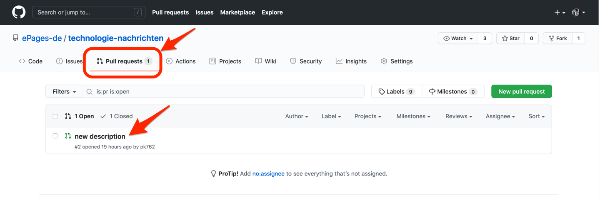
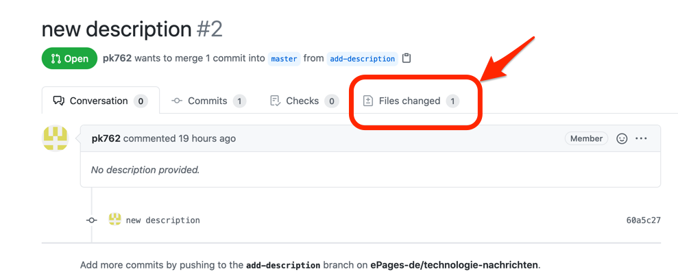
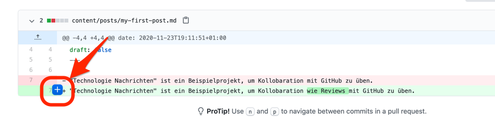
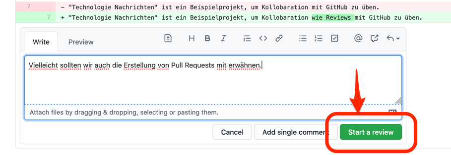
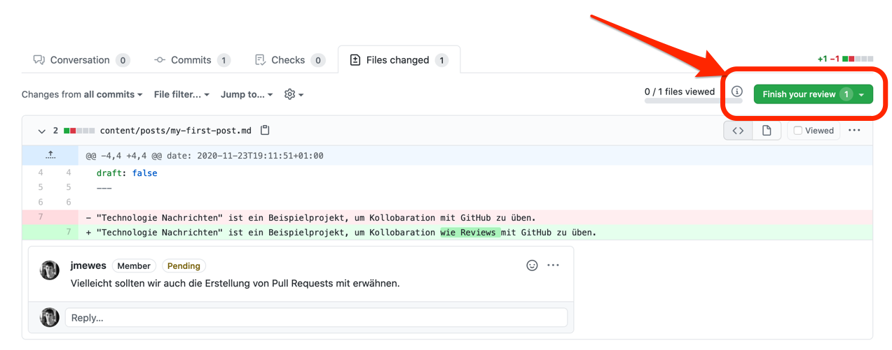
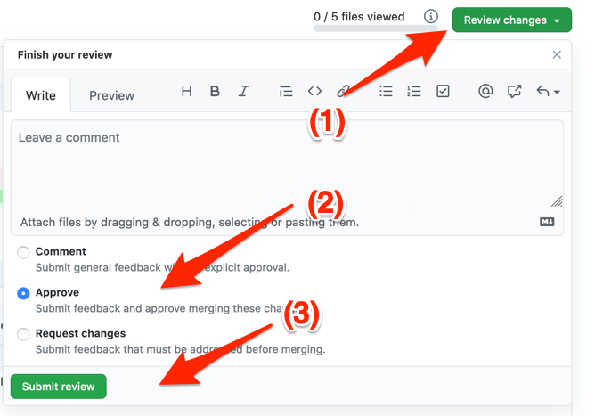
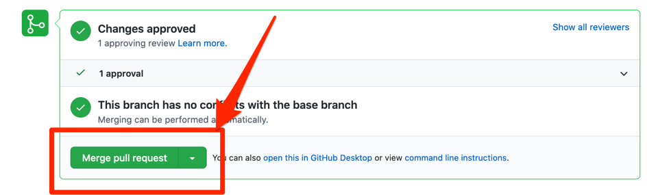

Einleitung
Code Reviews sind wichtig für professionelle Projekte um (1) das Wissen zu verteilen, (2) Fehler zu finden und (3) für einen hohe interne Qualität der Software zu sorgen.
Dieses Tutorial beschreibt, wie man Code Reviews durchführen kann.
Voraussetzungen
- Um Code Reviews durchführen zu können, brauchen Sie von dem Besitzer des Repositories die Schreibberechtigung dazu.
- Jemand hat in dem Repository einen Pull Request gestellt.
Referenzen
- How to keep up your code quality – epages devs blog
- Inviting collaborators to a personal repository
Pull Request öffnen
Gehen Sie auf das Hauptprojekt und öffnen Sie dort das “Pull Requests” Tab.
https://github.com/ePages-de/technologie-nachrichten/pulls

In den Details zu dem Pull Request, wechsel Sie zu dem “Files changed” Tab.

Anmerkungen hinzufügen
Beim Überfahren der geänderten Zeilen mit dem Mauszeiger können sie einen blauen Button am Beginn der Zeile sehen.

Wenn Sie diesen drücken öffnet sich eine Eingabemaske, in der Sie dem Autor des Pull Requests Feedback zu dieser Zeile geben können.

Review abschließen
Wenn Sie mit Ihrem Review fertig sind, drücken Sie den Button rechts oben mit der Aufschrift “Finish your review”.

Bevor Sie den sich daraufhin öffnenden Dialog bestätigen, müssen Sie entscheiden ob Sie den Pull Request nur Kommentieren möchten, ob Sie den Pull Request genehmigen oder Änderungen anfordern wollen.

Der Autor des Pull Requests bekommt daraufhin von GitHub eine Email als Notifikation für Ihr Feedback.
Pull Request mergen
Wechseln Sie danach in das “Conversation” Tab in den Pull Request Details und scrollen Sie ganz nach unten. Dort können Sie dann über den “Merge pull request” Button den Pull Request in den Hauptzweig des Repositories mergen.
